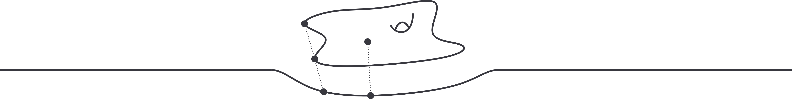

The Les Houches School Quantum Geometry (Mathematical Methods for Gravity, Gauge Theories and Non-Perturbative Physics) will bring together world-leading experts in theoretical physics. It will offer introductory courses, covering topics such as quantum gravity, gauge theories, and non-perturbative physics. These courses will place a significant emphasis on methods in mathematical physics, including random matrix theory, topological recursion, resurgence, and moduli spaces. Joining this event will provide an unparalleled opportunity to explore these cutting-edge subjects and to connect with numerous colleagues and experts in a stunning environment.
The school is scheduled to take place over a span of four weeks, from July 29th to August 23rd, 2024. It will include 13 courses, each consisting of 3 to 4 sessions, with a daily schedule featuring three 90-minute lessons. Additionally, the program will be enriched by seminars addressing specific topics closely linked to the main course content.
The school program is limited to six hours of lessons per day, and therefore allows time for discussion and relaxation. The school facilities include a well-equipped library, meeting rooms, and a computer room. The site also has a foyer where people can gather around coffee and various games, table tennis, etc.
M. Mariño (U Geneva)
Non-perturbative topological strings

# Registration
Registration is now open! The online application can be found here.
Applications must reach the school before March 15th, 2024 in order to be considered by the selection committee. Selected applicants will be notified by the end of April.
The full cost of the school per participant, including housing, meals and the book of lecture notes, is around 2000€. We will be able to provide financial aid to a limited number of students.
Les Houches is a charming village situated in the heart of the scenic Chamonix valley. Established in 1951, the Physics School is situated at an elevation of 1150m above sea level in a natural setting, offering breathtaking views of the Mont-Blanc mountain range. This serene environment provides an ideal backdrop for reflection and discussion.
## Getting there
By train/bus:
One can reach Les Houches from Geneva by train. Please note that there are two possible connections, either via Annemasse on the French side or via Martigny on the Swiss side. Upon arrival at the Les Houches station, there is a change at Saint-Gervais if coming from France, or at Martigny if coming from Switzerland. There is also a regular bus service between Geneva and Les Houches (only once or twice a day).
Once you arrive at the train station, we highly recommend taking a taxi to reach the school, which is approximately 5km away. Here are some taxi phone numbers:
Cham Taxi: +33 06 07 26 36 62
Taxi Plus: +33 06 12 35 30 72
By plane:
The nearest airport to Les Houches is Geneva Airport, which is approximately a 1-hour drive from the school's location. You can find information on transit through Switzerland using the Travel Check service. Upon arrival at the airport, you have the option to reach the school by using a shuttle service or taking a train.
Shuttle service from Geneva Airport:
The most convenient way to reach the school's location from Geneva Airport is to use a shuttle service. You can book a shuttle in advance for approximately 40 euros, and we recommend booking at least three days prior to your travel. If you have a confirmed return date, we suggest booking a round trip.
We recommend using Mountain Drop-Offs for your travel, and you can enjoy price discounts by using the promo code EDP2014. To easily locate Mountain Drop-Offs' meeting point at Geneva Airport, please refer to the video guide "How to find Mountain Drop-Offs at Geneva Airport".
## Facilities
Participants will be housed in single or double rooms with their own bathroom. Towels, shampoo, soap, shower gel and hair-dryer are provided. The school also provides participants with:
a library with the main scientific journals (paper or online) and some reference books
an open space with many blackboards
a cafeteria with a piano, table soccer and table tennis
internet (WiFi + hubs to connect laptops to the local network), 5 desktop computers, a B&W Laser Printer, a photocopy machine, a video projector
3 washing machines and 3 dryers
3 meals per day at the school's restaurant
# Contact
For info contact houches0824@univ-grenoble-alpes.fr. If you need an invitation letter for a visa for France, please feel free to contact us.